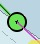
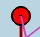

Radar Targets
3.3 Beta feature.
Some radars are able to create NMEA radar sentences from observed targets.
The ARPA targets, except for the way the data is acquired, are treated exactly as if they were AIS, including timeouts.
 Arpa Target
Arpa Target
Arpa Target
Arpa Target
Arpa Target
Implementation details: https://github.com/nohal/OpenCPN/wiki/ARPA-targets-tracking-implementation
Discussion: http://www.cruisersforum.com/forums/f134/radar-nmea-messages-104048.html#post1239386